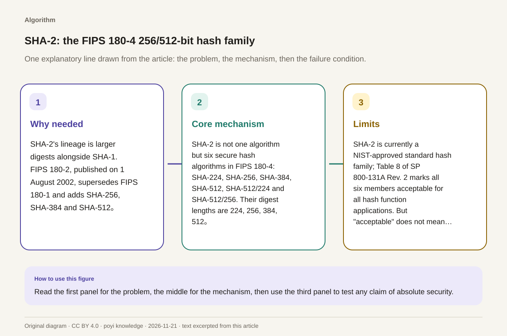
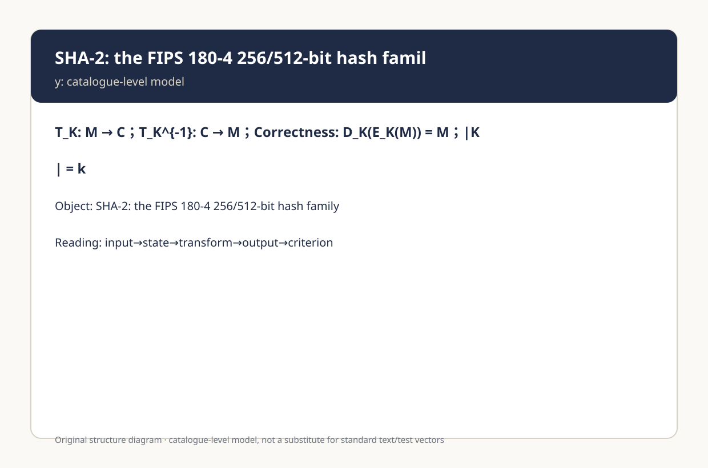

Principles
Algorithm: SHA-2 (SHA-2 散列家族). SHA-2 is not one algorithm but six secure hash algorithms in FIPS 180-4: SHA-224, SHA-256, SHA-384, SHA-512, SHA-512/224 and SHA-512/256. Their digest lengths are 224, 256, 384, 512, 224 and 256 bits respectively. The family has two lines: SHA-224/256 use 32-bit words, 512-bit message blocks and 64 rounds; SHA-384/512 and the two SHA-512/t variants use 64-bit words, 1024-bit message blocks and 80 rounds. | Algorithm | Digest | Block | Word | Rounds | | --- | --- | --- | --- | --- | | SHA-224 | 224 | 512 | 32 | 64 | | SHA-256 | 256 | 512 | 32 | 64 | | SHA-384 | 384 | 1024 | 64 | 80 | | SHA-512 | 512 | 1024 | 64 | 80 | | SHA-512/224 | 224 | 1024 | 64 | 80 | | SHA-512/256 | 256 | 1024 | 64 | 80 |
Padding has the same structure as SHA-1's but a longer length field: append a single 1 bit (an 0x80 byte in implementations), then enough 0 bits to make the length congruent to 448 modulo 512 (SHA-224/256) or 896 modulo 1024 (SHA-384/512 family), and finally the 64-bit or 128-bit big-endian message length. SHA-224/256 accept input shorter than 2^64 bits; the SHA-384/512 family accepts input shorter than 2^128 bits. The padded message is parsed into "512-bit or 1024-bit blocks"; each block is split into sixteen "32-bit or 64-bit words", written most significant byte first. For "abc", the SHA-224/256 padded block is 61 62 63 80 followed by 52 00 bytes and the 8-byte length 00 00 00 00 00 00 00 18. The initial values of SHA-256/384/512 come from fractional parts of square roots of primes; SHA-224 and SHA-512/t use their own specified derived values:
- SHA-256: the first 32 bits of the fractional square roots of the first eight primes, namely 6a09e667, bb67ae85, 3c6ef372, a54ff53a, 510e527f, 9b05688c, 1f83d9ab and 5be0cd19. - SHA-224: uses the same algorithm as SHA-256 but a different initial value, namely c1059ed8, 367cd507, 3070dd17, f70e5939, ffc00b31, 68581511, 64f98fa7 and befa4fa4; these are the low 32 bits of SHA-384's eight 64-bit initial values. - SHA-512: the first 64 bits of the fractional square roots of the first eight primes, namely 6a09e667f3bcc908, bb67ae8584caa73b, 3c6ef372fe94f82b, a54ff53a5f1d36f1, 510e527fade682d1, 9b05688c2b3e6c1f, 1f83d9abfb41bd6b and 5be0cd19137e2179. - SHA-384: the first 64 bits of the fractional "square roots of the ninth through sixteenth" primes, namely cbbb9d5dc1059ed8, 629a292a367cd507, 9159015a3070dd17, 152fecd8f70e5939, 67332667ffc00b31, 8eb44a8768581511, db0c2e0d64f98fa7 and 47b5481dbefa4fa4. SHA-512/224 and SHA-512/256 use the SHA-512/t IV generation function: XOR the eight SHA-512 initial words with a5a5a5a5a5a5a5a5, then compute SHA-512 over the string
"SHA-512/224"or"SHA-512/256"(t replaced by 224 or 256) with that IV; the resulting eight words are the IV. FIPS 180-4 explicitly approves the t=224 and t=256 truncations. The round constants also come from primes: SHA-224/256 use 64 32-bit constants, the first 32 bits of the fractional cube roots of the first 64 primes, from 428a2f98 through c67178f2; the SHA-384/512 family uses 80 64-bit constants, the first 64 bits of the fractional cube roots of the first 80 primes, from 428a2f98d728ae22 through 6c44198c4a475817. The 32-bit variants useCh(x,y,z) = (x and y) xor (not x and z),Maj(x,y,z) = (x and y) xor (x and z) xor (y and z), and four rotate/shift functions:Σ0 = ROTR2 xor ROTR13 xor ROTR22,Σ1 = ROTR6 xor ROTR11 xor ROTR25,σ0 = ROTR7 xor ROTR18 xor SHR3, andσ1 = ROTR17 xor ROTR19 xor SHR10. The 64-bit variants have the same structure with rotations 28/34/39, 14/18/41, 1/8/7 and 19/61/6. The message schedule starts with the sixteen block words and then computesW(t) = σ1(W(t−2)) + W(t−7) + σ0(W(t−15)) + W(t−16); SHA-256 expands to 64 words and SHA-512 to 80. Each round computes
T1 = h + Σ1(e) + Ch(e,f,g) + K(t) + W(t)
T2 = Σ0(a) + Maj(a,b,c)
h←g g←f f←e e←d+T1 d←c c←b b←a a←T1+T2
All additions are modulo 2^32 in the 32-bit variants and modulo 2^64 in the 64-bit variants. After the 64 or 80 rounds of a block, the eight working variables are added back to the incoming eight hash words; after all blocks, the output is those eight words, or a 224/384/256-bit truncation for the relevant variant.

Why it matters
SHA-2's lineage is larger digests alongside SHA-1. FIPS 180-2, published on 1 August 2002, supersedes FIPS 180-1 and adds SHA-256, SHA-384 and SHA-512, three algorithms "capable of producing larger message digests"; SHA-1 itself is unchanged as an algorithm, with notation adjustments. Change Notice 1 of 25 February 2004 adds SHA-224; FIPS 180-4 of August 2015 adds SHA-512/224 and SHA-512/256. SHA-2 is not a simple truncation of SHA-1: it uses larger states, different word sizes and different round counts.
The family deliberately has two lines: SHA-224/256 target 32-bit operations, while the SHA-384/512 family targets 64-bit operations. This lets one family cover different platforms and digest lengths: SHA-256 when a 256-bit digest is needed, the SHA-512 family when a longer digest or 64-bit arithmetic is advantageous, and the truncated variants when the SHA-256/512 compression function must be kept but a 224/384-bit output is required.
The IVs and round constants come from fractional parts of square and cube roots of primes. This public, reproducible derivation reduces the room for hidden structure, but the standard does not treat it as a security proof. FIPS 180-2 calls the algorithms secure because it is computationally infeasible to find a preimage or a collision - the security assumption of its time, not a mathematical theorem. NIST SP 800-107 Table 1 gives the security strengths: SHA-224 has 112/224 bits of collision/preimage resistance, SHA-256 128/256, SHA-384 192/384, SHA-512 256/512, SHA-512/224 112/224 and SHA-512/256 128/256.
Applications
SHA-2's typical uses include digital signatures, certificates, HMAC and hash-based key derivation. SP 800-107 lists digital signatures as a typical use of SHA-2 and notes that a digital signature's security strength is the hash function's collision resistance strength; it also devotes a section to HMAC, stating that HMAC security depends on the underlying hash, the key strength and the MacTag length, and uses SHA-2 in a two-step extract-then-expand key derivation structure.
HMAC-SHA-2 has public conformance vectors. RFC 4231's Jefe case uses key "Jefe" and message "what do ya want for nothing?", with HMAC-SHA-256 5bdcc146bf60754e6a042426089575c75a003f089d2739839dec58b964ec3843 and HMAC-SHA-512 164b7a7bfcf819e2e395fbe73b56e0a387bd64222e831fd610270cd7ea2505549758bf75c05a994a6d034f65f8f0e6fdcaeab1a34d4a6b4b636e070a38bce737. RFC 6234 provides C reference code, test vectors and HMAC/HKDF implementations for SHA-224/256/384/512.
NIST's current policy marks all six SHA-2 members acceptable for all hash function applications. Table 8 of SP 800-131A Rev. 2 states this explicitly. This is a standards-level statement, not a claim that every SHA-2 use is automatically secure; a protocol still has to choose the right property (collision, preimage, second preimage) and manage keys correctly.
Truncated variants suit output-length-constrained settings, at the cost of collision resistance. SP 800-107 permits truncated message digests but requires collision resistance to be counted as half the truncated length; for example, a 96-bit truncated SHA-256 has only 48-bit collision resistance. SHA-256's 256-bit output must not be equated with 256-bit collision security.

Limits & attacks
SHA-2 is currently a NIST-approved standard hash family; Table 8 of SP 800-131A Rev. 2 marks all six members acceptable for all hash function applications. But "acceptable" does not mean no attack surface; at least three boundaries matter.
Length extension: SHA-2 uses Merkle-Damgård iteration, where the chaining value after each block is the input to the next and the final output is the chaining value. Given H(M) and the length of M, an attacker can compute H(M || pad(M) || X) without knowing M. This is not a collision, but it breaks the naive construction that uses the hash directly as a MAC. This batch demonstrates it with "abc": knowing SHA-256("abc") and the 64-byte padded length, it computes f4566a6bc1df12da948d3d1da5e67458ff0cb761d456bd7382438a8903b433b4 without rereading the original message, matching the direct hash of abc || pad(abc) || "extra".
Do not use H(K||M) as a MAC: because of length extension, a MAC built by concatenating a key and a message with SHA-2 is insecure. Use HMAC; SP 800-107 gives guidance on HMAC use, and HMAC separates key processing from message hashing with its ipad/opad layers. The RFC 4231 vectors can be used to check an HMAC-SHA-2 implementation.
Truncation lowers strength: a digest truncated to t bits provides at most about t/2 bits of collision resistance; SHA-224, SHA-384, SHA-512/224 and SHA-512/256 provide about 112, 192, 112 and 128 bits of collision resistance respectively. When choosing a truncated variant, estimate by the target security strength, not by the nominal output length of the parent variant.
NIST approval is a policy judgement, not a mathematical proof; better cryptanalysis of the SHA-2 compression function may appear in the future. Engineering practice should treat SHA-2 as a currently usable standard hash, not a guarantee of permanent security; when a different structural assumption is needed, SHA-3 is another NIST-approved family.
History
- 1 August 2002: FIPS 180-2 is published with SHA-1, SHA-256, SHA-384 and SHA-512; it supersedes FIPS 180-1 and adds three algorithms capable of producing larger digests. - 25 February 2004: Change Notice 1 to FIPS 180-2 adds SHA-224. - 17 October 2008: FIPS 180-2 is superseded by a later edition; FIPS 180-4 Appendix C describes technical changes from FIPS 180-3. - May 2011: RFC 6234 is published, obsoleting RFC 4634 and providing open-source implementations and test vectors for SHA-224/256/384/512, HMAC and HKDF. - August 2015: FIPS 180-4 is published, adding SHA-512/224 and SHA-512/256 to FIPS 180-3. - March 2019: NIST SP 800-131A Rev. 2 is published; Table 8 marks the SHA-2 family acceptable for all hash function applications.
Worked example & verification
Worked example
Take one published or standard test vector, record the input, the ordered steps and the byte-exact output, then compare with an independent implementation. Where no citable numeric vector is available, the entry records only structural steps and does not invent an output.
References
- Wikipedia search entry for SHA-2 散列家族. https://zh.wikipedia.org/w/index.php?search=SHA-2%20%E6%95%A3%E5%88%97%E5%AE%B6%E6%97%8F
- Handbook of Applied Cryptography (Menezes, van Oorschot, Vanstone). https://www.cacr.math.uwaterloo.ca/hac/